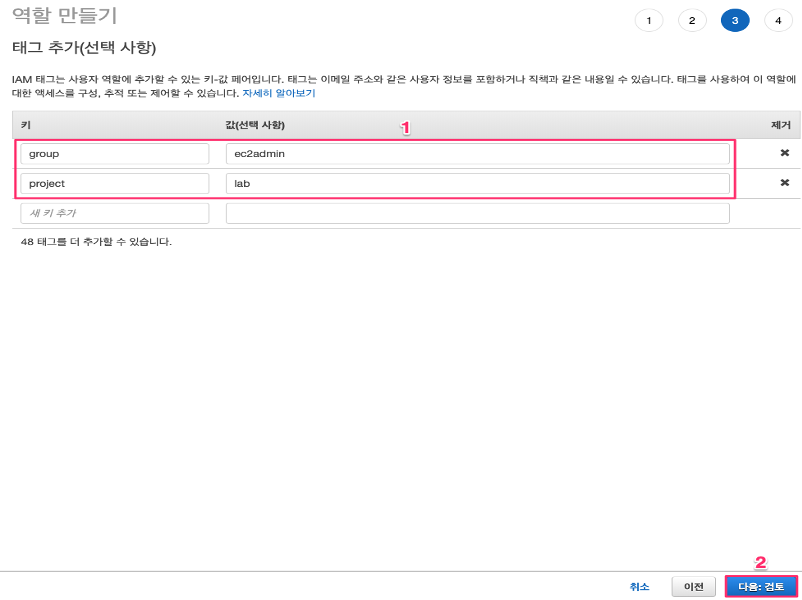
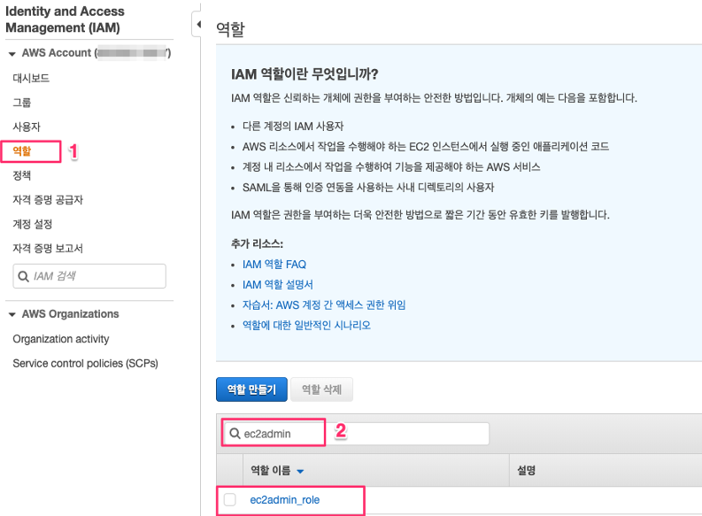

IAM 역할(Role) 생성
IAM 역할 생성
IAM 역할은 IAM 서비스에서 제공하는 구성요소 중 하나로서 AWS 서비스에서 권한을 수행하는 여러가지 주체(Principle) 중 하나입니다. 역할은 사용자와 비슷한게 할당받은 정책(관리형 정책 혹은 인라인 정책)을 통하여 여러 AWS 서비스에 대한 권한을 갖게됩니다. IAM 정책의 주체(Priciple)로서 권한을 행사한다는 점에서 역할은 사용자와 아주 비슷하지만 사용자와는 다르게 “임시 보안 자격 증명” 을 사용한다는 점에서 보안적으로 아주 큰 장점을 가지고 있습니다. 기본적으로 역할은 지정된 자격증명(아이디나 암호, 액세스 키 등)이 없습니다. 대신, 사용자가 역할을 사용하게 될 때 임시로 발급되는 자격증명을 사용하기 때문에 보다 안전한 AWS 운영 환경을 구성할 수 있습니다.
- “서비스”메뉴에서 “IAM”을 선택하거나 검색하여 IAM Management Console로 이동하십시오.
- “IAM 대시 보드”에서 “역할”를 선택한 후, “역할 만들기”를 선택합니다.
- “역할 만들기” 화면에서 “신뢰할 수 있는 유형의 개체 선택” 메뉴 중 “다른 AWS 계정” 을 선택합니다. “다른 AWS 계정”을 선택한 후 나타나는 아래와 같은 화면의 계정 ID 부분에 자신의 계정 ID 를 입력합니다. 입력 후 “다음: 권한” 버튼을 클릭합니다.
(*자신의 계정 ID 는 IAM 대시보드에서 확인할 수 있습니다.)
- “역할 만들기” 2단계화면에서는 아래와 같이 “정책 필터” 에 “ec2full” 을 입력한 후 나타나는 “AmazonEC2FullAccess” 라는 이름의 AWS 관리형 정책을 선택합니다. 선택한 후 “다음: 태그” 버튼을 클릭합니다.
- 실제 업무 환경에서는 업무 유형과 환경에 따라 태그를 보다 정교하게 설정하여 활용하는 것이 보안과 관리상 편리하지만 이 Lab 에서는 아래와 같이 “group:ec2admin”,”project:lab” 과 같이 2개의 태그를 입력하도록 하겠습니다. 태그를 입력한 후 화면 하단의 “다음: 검토”를 클릭합니다.

- “역할 이름”에 “ec2admin_role” 을 입력한 후 “역할 만들기 버튼을 클릭합니다.
- 방금 생성한 역할을 확인하기 위하여 IAM 대시보드에서 역할을 선택한 후 검색창에 “ec2admin” 을 입력하여 조금 전 생성한 역할이 정상적으로 나타나는지 확인합니다.
